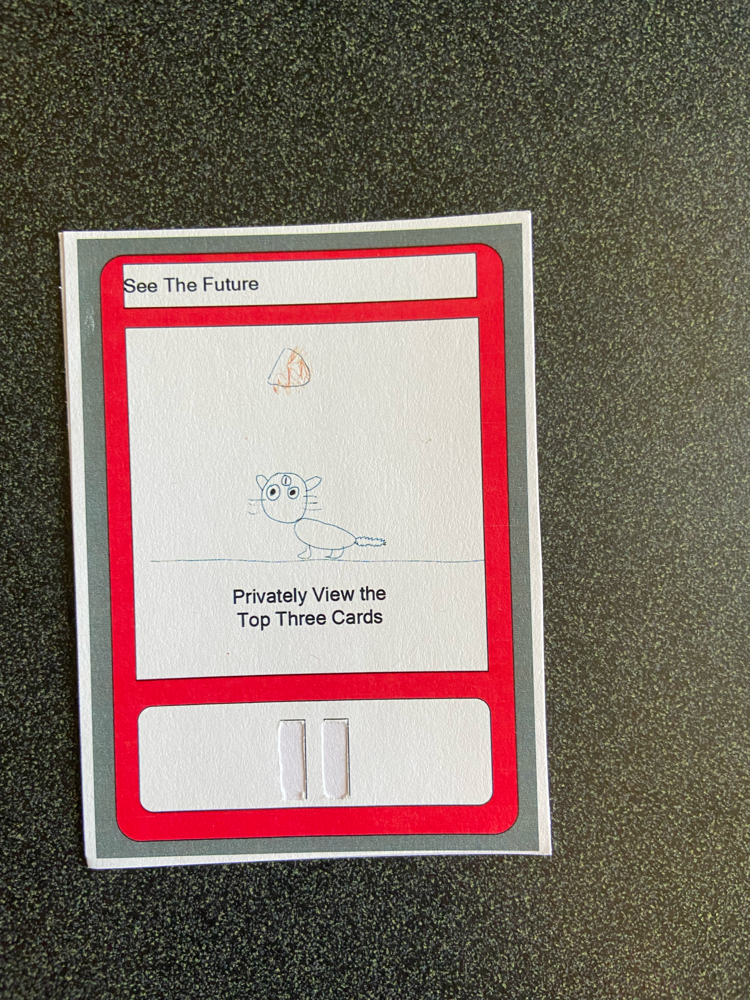
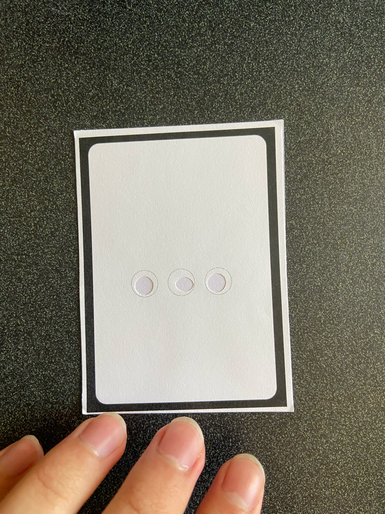

Last Updated On: 01/10/2025 1:54 PM PST
Refresh for up-to date site.
Click here to play "Life of Slime"
The first non-Twine graphical game I ever created. This was a final group project for CMPM 80K in UCSC, and were given the
restriction of only building our game using the free version of Construct. For this project, I created the pixel art such as the slime,
the enemies, hazards, and the grass. After creating those assets, I then went to design each of the levels of the game, placing hazards and
enemies and figuring out what is a good diffculty for the current level, and balancing out level progression and difficulty.
Video Showcasing the gameplay Life of Slime
Click here to play "Shape Wars"
This game was created for an assignment for CMPM 120, where we were tasked to create an endless runner using Phaser3. Given the time restraint of the assignment as well
as my inexperience with Phaser3 at the time, I wanted to design a game using the most simplistic designed assets, but fleshed out the game mechanics of my endless runner.
This led to the creation of Shape Wars, where players controled a Blue Square with limited amount of projectile based attacks, with the goal of lasting as long as they can without
getting hit by one of the red triangles falling down. During this time, I was also learning how physics movement worked in Phaser3, which created a "happy accident" of giving
the Blue Square a "slippery" movement with moving left and right, which worked really well to the game, as players had to manage their inputs to make sure they don't slide to a direction
and get hit by one of the Red Triangles. I also designed a difficulty spike when every 5 seconds has passed, where the Red Triangles speed will slightly go faster. This way, players won't
get too comfortable with the current speed of the triangles and will have to pay attention to the red triangle speeds so they don't get hit by them.

Video Showcasing the gameplay of Shape Wars
This was a group project created for our final in CMPM 80A, where we modded the card game "Exploding Kittens" to be playable for people who had an visual impariment. For this project, I was tasked with
desiging the cards and implementing our mod so visual impaired people were able to play the game. For this project, we decide to go with different shapes and amount of shape to represent what a card is and
if the player is holding the card backwards or correctly. After desiging the cards with the proper shapes and printing it out, I cut out the shapes so I can glue the front side and the back side of the card to
an index card. This way, players can feel the the shapes on a side of the card to first determine which side is the front and back of a card, and then to determine what exact card they have in their hands.
Video Showcasing the Modded Exploding Kittens Card

